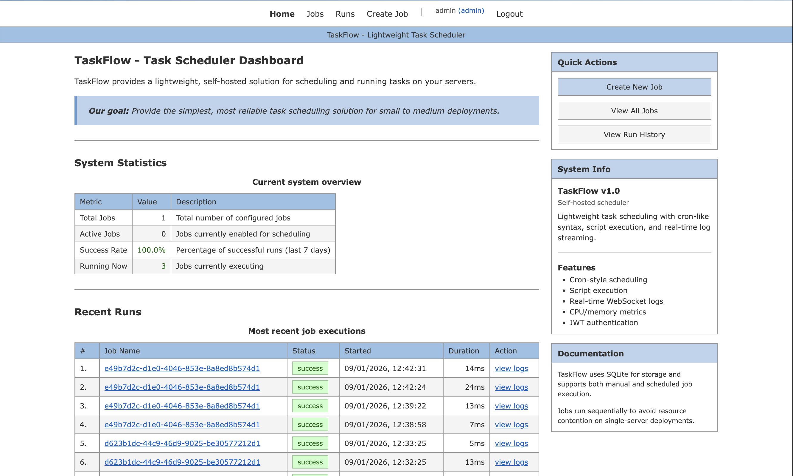

Interface Preview

Features
Job Scheduling
- Flexible cron-like scheduling
- Timezone support per job
- Timeout and retry configuration
- Sequential execution queue
Script Execution
- Bash script execution
- Real-time log streaming via WebSocket
- Exit code tracking
- Automatic log retention
Monitoring
- CPU and memory metrics
- Execution history
- Success/failure statistics
- Run duration tracking
Authentication
- JWT-based authentication
- Admin and user roles
- Bootstrap mode for first setup
- Auto-generated JWT secrets
Quick Start
# Clone the repository
git clone https://github.com/muthuspark/taskflow.git
cd taskflow
# Build the application
make build
# Run (JWT_SECRET auto-generated if not set)
make run
# Access the web interface
# http://localhost:8080
Configuration
| Variable | Default | Description |
|---|---|---|
| PORT | 8080 | HTTP listen port |
| DB_PATH | taskflow.db | SQLite database file path |
| JWT_SECRET | (auto-generated) | Secret for JWT signing |
| LOG_RETENTION_DAYS | 30 | Days to keep run history |
| API_BASE_PATH | /taskflow/api | Base path for API endpoints |
Technology Stack
Go
Backend & API
SQLite
Database
Vue.js
Frontend SPA
WebSocket
Real-time Logs